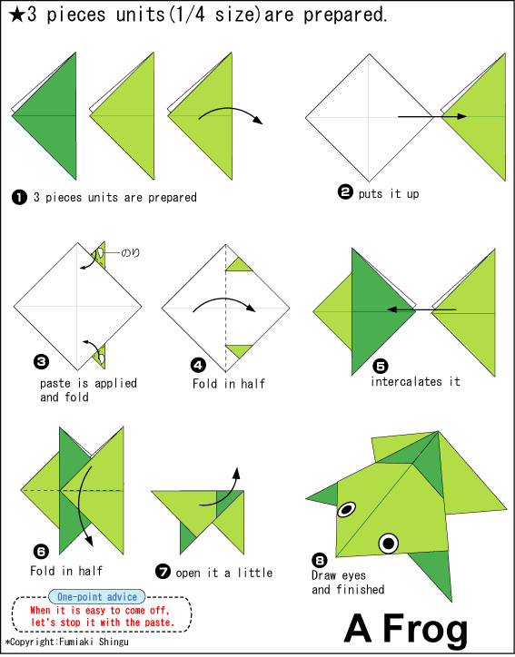
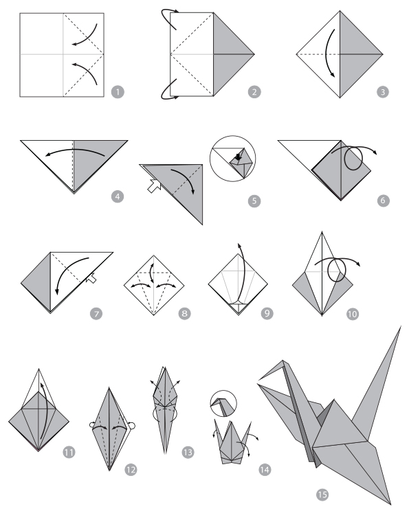
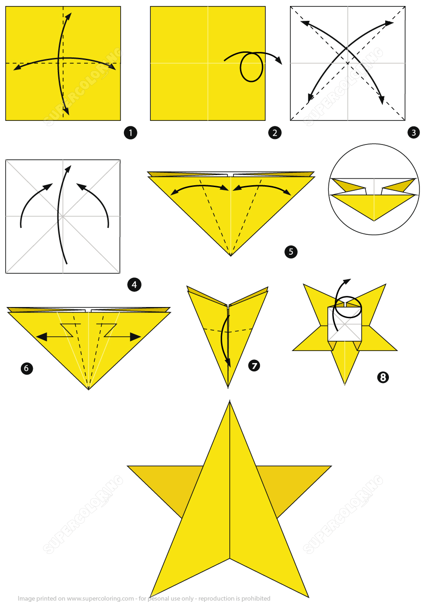
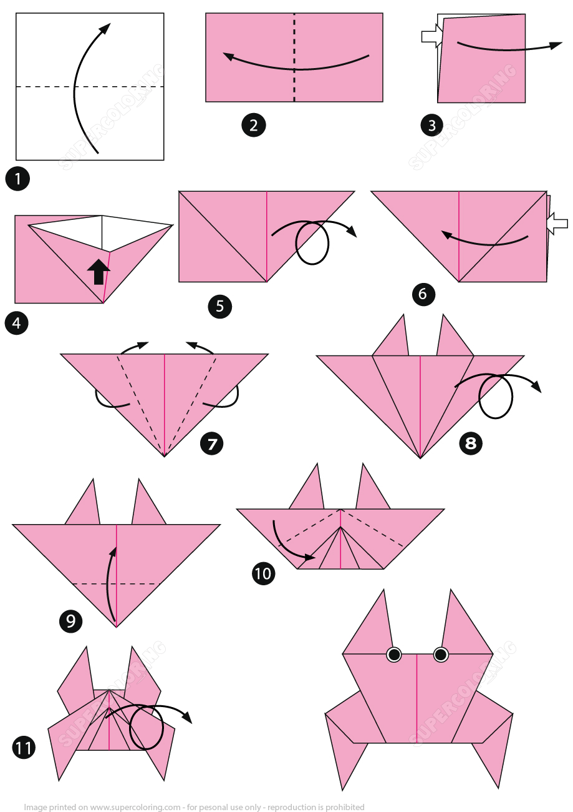
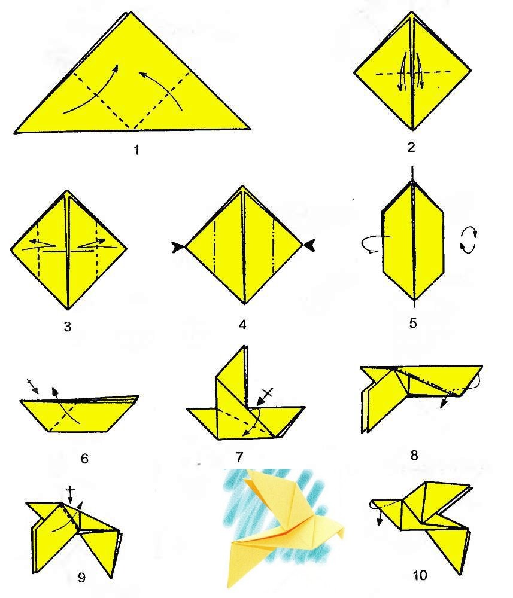

The History of Origami
By Lani Earley
Origami is a unique form of art that has been used all around the world. Origami consists of the folding and cutting of paper to make beautiful scultptures. This art-from was originally developed in Japan after paper was brought there from China by Bhuddist monks. Origami has many common day references in literature, such as in the book Sodoku and the 1000 paper cranes, and the Origami Yoda series. Origami is usually taught briefly in art programs in most schools, and is a facinating peice of art made by another culture. In this website we have some different examples of origami you can make at home.

- Frogs are a versatile species of amphibian that lives all around the globe.
- Often confused with toads, frogs require more moisture and have specilized toe pads to help them climb.

- Cranes are a fasinating bird known for their large wingspan and long beak.
- Cranes are a common staple of begginer origami and are often mentioned in literature.

- Stars are another easy origami used commonly by beginners.
- Stars are often used to symoblise wishes in literature, while actually they are flaming balls of gas millions of miles away.

- Crabs are another versatile species with many different adaptations.
- Some like the pom-pom crab have evolved to hae large tufts of the tops of their claws, while others like the vampire crab evolved to have bright colors.

- Pigeons are a small bird known for being a pest in large cities.
- Pigeons however also can be very useful. Some species have been bred to fly hundreds of miles, or to flip through the sky like an acrobat.